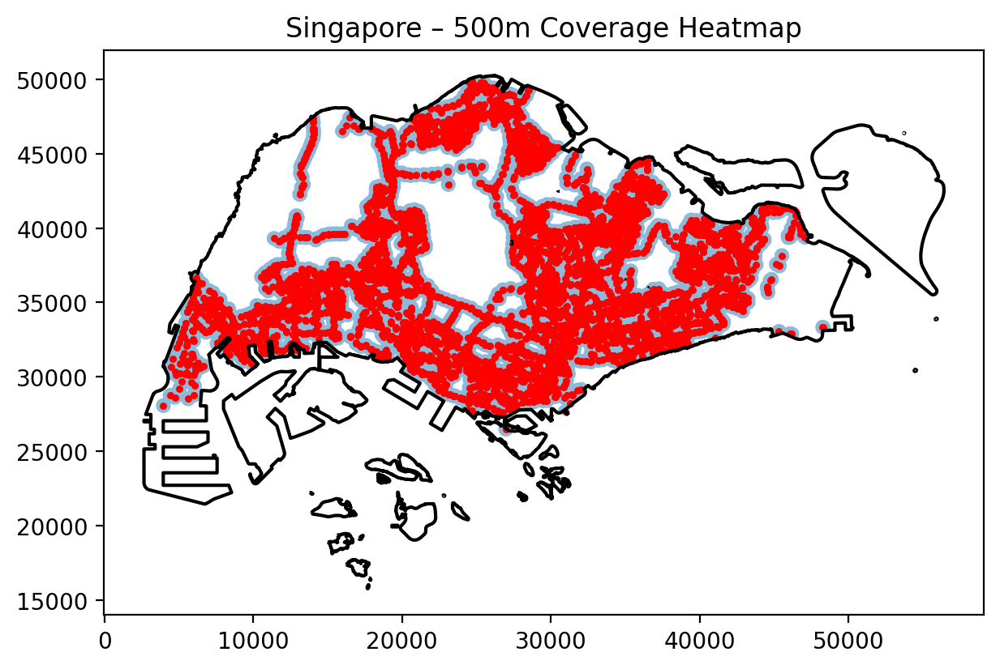

Singapore
1. Bus stops and boundary

Singapore’s bus stops are tightly concentrated within the main urbanised island. The stop pattern broadly follows the public housing new towns from Jurong in the west to Tampines and Pasir Ris in the east, with particularly dense strings of stops along the north–south and east–west corridors that parallel the MRT lines.
Large gaps in the north-west and central part of the island coincide with the Central Catchment Nature Reserve, military training areas and low-density industrial land, rather than underserved residential neighbourhoods.
Compared with New York City, Singapore has fewer extreme peripheral areas: almost all developable land is within a continuous urban fabric. This helps explain why Singapore records the highest bus-stop density in the comparative statistics (about 6.6 stops/km²), considerably higher than New York City (~2.5 stops/km²) and somewhat higher than Amsterdam (~4.7 stops/km²). The morphology of a compact island city-state with strong planning control supports a finely spaced stop network.
2. 500 m coverage

The 500 m buffer map shows that most urbanised parts of Singapore fall within walking distance of at least one bus stop. The estimated share of land area covered within 500 m is about 55.9%, very similar to the other three cities (roughly 55–57%). However, because large tracts of land are reserved for nature, industry or airport uses, the coverage percentage is not directly comparable to residential accessibility.
Spatially, high coverage is seen:
- along the north-south corridor from Woodlands through Yishun and Ang Mo Kio to Toa Payoh;
- across the eastern “HDB heartlands” such as Bedok, Tampines and Pasir Ris;
- in older public housing estates and industrial areas in the west (Jurong East/West).
Lower coverage appears in the central water-catchment and military zones, as well as in some coastal industrial areas. These are intentional “holes” in the network rather than service gaps.
Relative to New York City, where coverage drops in low-density fringes and on barrier islands, Singapore’s coverage map is more contiguous across the urbanised band. This reflects the state’s planning goal of ensuring that almost all public housing estates are within a short walk of both bus services and the MRT.
3. Kernel density heatmap

The kernel density heatmap reveals several high-intensity ridges of bus stop concentration:
- a strong east–west band from Jurong East through Clementi and Queenstown towards the Central Area;
- a dense cluster in and around the traditional CBD and Orchard corridor;
- high densities in new towns such as Ang Mo Kio, Hougang, Bedok, Tampines and Pasir Ris.
Compared with the point map, the KDE surface smooths local variation and highlights broader structural patterns: Singapore’s bus system concentrates stops along town centres, interchanges and major distributor roads, with somewhat lower intensities in industrial estates and exclusive residential enclaves.
When contrasted with New York City’s KDE, Singapore appears more spatially even: rather than a single dominant spine like Manhattan, multiple “peaks” related to decentralised new-town centres can be seen. This is consistent with the transit-oriented land-use strategy in which each new town has its own bus interchange and commercial core, reducing the need to funnel all trips through a single CBD.
4. Nearest-neighbour distances

The nearest-neighbour analysis quantifies how tightly bus stops are spaced:
- mean nearest-neighbour distance: ~79.7 m
- median distance: ~57.1 m
- 90th percentile distance: ~161 m
- minimum distance: essentially 0 m (paired stops or loop terminals)
- maximum distance: ~1.1 km
The histogram is sharply right-skewed: the majority of stops lie within 100 m of their closest neighbour, indicating a very fine mesh of services along key corridors. The spatial map shows slightly larger distances in industrial areas, expressway segments and some coastal reclamation zones, where stops are naturally more widely spaced and pedestrian access is restricted.
Compared with the other cities, Singapore shows:
- much smaller mean and median distances than New York City (mean ≈ 183 m, median ≈ 108 m), reflecting closer stop spacing in a compact urban environment;
- slightly larger distances than Amsterdam, where the highly walkable inner city and tram-bus integration bring typical distances down to around 63 m mean and 39 m median;
- shorter distances than Shanghai, where the large metropolitan extent and arterial focus of services yield a mean ≈ 91 m and a maximum above 1.2 km.
Overall, the nearest-neighbour statistics support the interpretation that Singapore’s bus network provides very fine local accessibility within built-up areas, with only a small share of stops experiencing gaps greater than 200–300 m.
5. Context: structure of the Singapore bus network

Image source: Land Transport Authority, Singapore – Bus Route Map.
The official route map helps to interpret the spatial metrics above:
- Trunk and express routes form long east–west and north–south axes, broadly mirrored in the KDE heatmap’s high-density bands.
- Feeder services circulate within each new town, connecting housing blocks to bus interchanges and MRT stations; these explain the dense local clusters of stops and the short nearest-neighbour distances.
- Under the Bus Contracting Model, routes are bundled into service packages and competitively tendered, but still centrally planned by the Land Transport Authority. This allows the authority to maintain relatively even geographic coverage and regular stop spacing, independent of purely commercial considerations.
Placed alongside New York City, Amsterdam and Shanghai, Singapore’s figures illustrate a particular model of high-intensity bus provision in a small, centrally governed city-state:
- stop density is the highest among the four cases, consistent with the emphasis on public transport as the dominant travel mode;
- 500 m coverage is similar to the others, but this is achieved while a large share of land is reserved for non-urban uses, implying especially good coverage of developed land;
- nearest-neighbour distances are short but not extreme, suggesting a balance between walking convenience and operational efficiency.
These patterns reflect policy choices: a strong integration between bus and rail, systematic provision for HDB estates, and careful control of urban expansion. Together they help explain why Singapore’s bus system achieves both high spatial accessibility and relatively compact urban form.